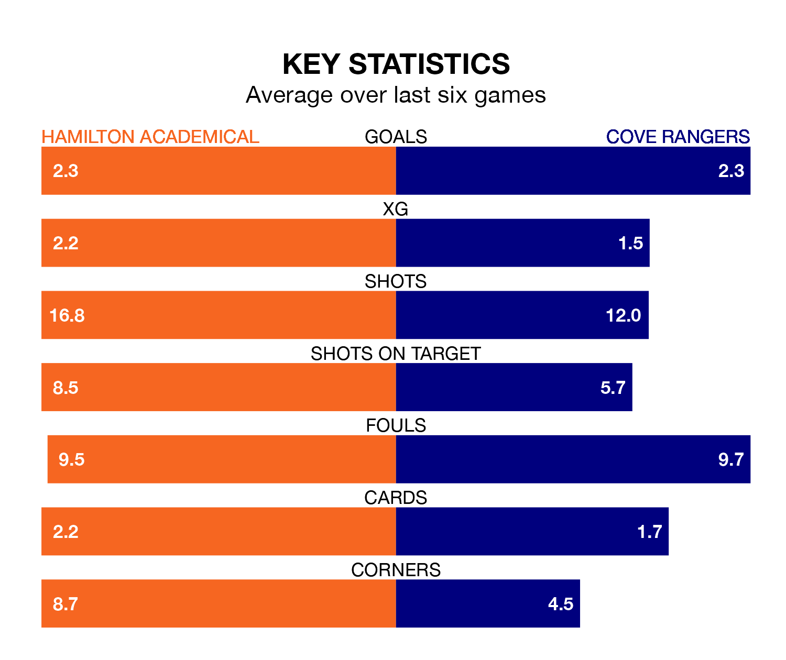

Hamilton Academical host Cove Rangers in Saturday's match at the Fountain of Youth Stadium looking to bounce back from defeat last time out in League One.
The Accies, who sit second in the league after 19 games, fell to a 2-5 away defeat to Edinburgh City on December 30.
They face a Cove side who also lost their last match, a 4-0 defeat to Falkirk, and who sit third in the table.
With 41 goals in 19 games so far this season, Hamilton Academical are the league's second-highest scorers with 2.2 goals per game. And they are conceding fewer than average, letting in 13 goals at a rate of 0.7 per game.
Cove are also above average scorers, with 1.8 goals per game, compared to a league average of 1.6. They have conceded 1.4 goals per game.
In Rumarn Burrell, Rangers have the league's most on-form striker so far this season. He has notched 17 goals in 20 appearances.
His goal rate of one every 100 minutes is quicker than that of Kevin O'Hara, the Accies's top scorer with a goal every 173 minutes, and a total of eight goals in 19 games.
The hosts are in reasonable form in League One, with three wins and two draws from their last six games.
With two wins and two draws over that period, the Wee Rangers' form is worse – they have taken eight points from 18, compared to Hamilton Academical's 11.
Over the last year, Hamilton Academical and Cove have played each other on four occasions. They won one each, and they drew twice.
On average, the Accies scored 1.0 goal and the Wee Rangers 1.0 in those matches.
Their last meeting was on November 4, when Cove won 1-0 at home.
Updated: 13:38 (UTC), 10/01/24